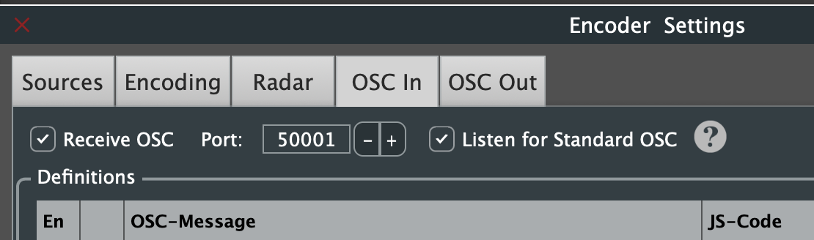
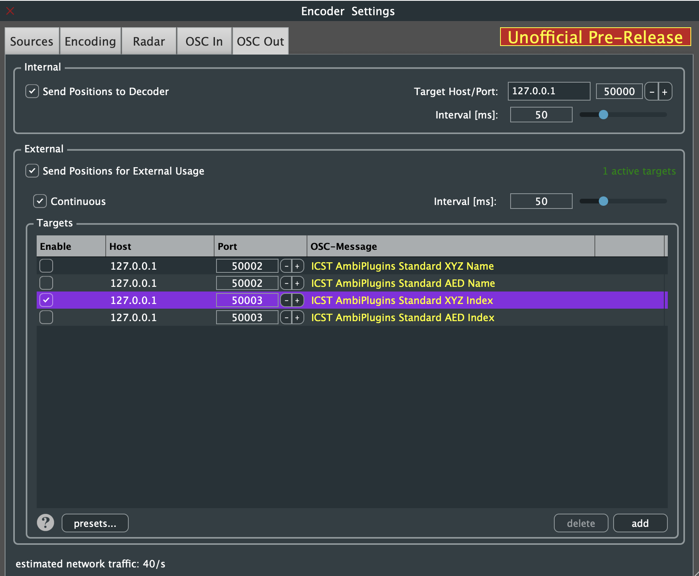
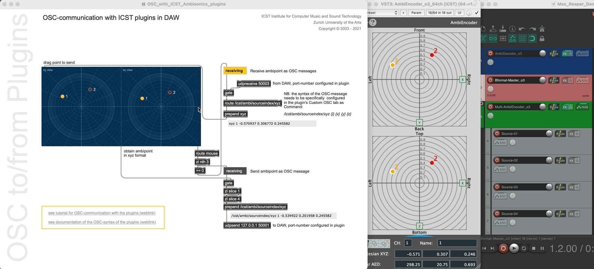
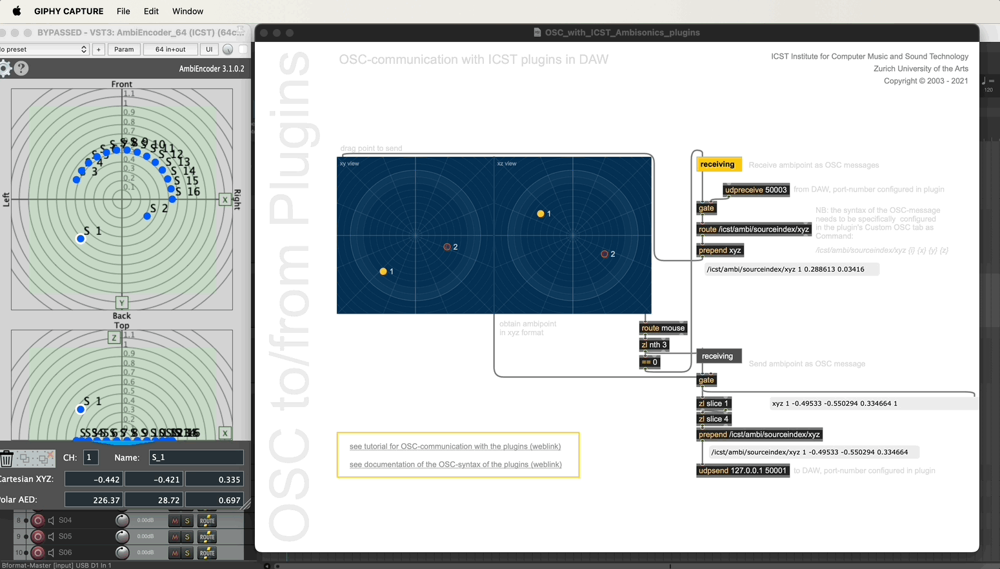

Institute for Computer Music and Sound Technology / (ICST) Zurich University of the Arts
Bidirectional OSC communication with MaxMSP
Generate motion data in Max and send it via OSC to the ICST AmbiEncoder in your DAW. Alternatively, transfer a motion composition from your DAW to the icst.ambisonics-externals.
Required Software:
- MaxMSP v.8.0+ → cycling74.com
- ICST Ambisonics Tools v3 → cycling74.com
- ICST Ambisonics Plugins (VST3/AU) → ICST AmbiPlugins
- Reaper (DAW) → reaper.fm
Setup Guide:
1. Configure OSC in ICST AmbiEncoder
-
Open the ICST AmbiEncoder in an FX slot and navigate to Encoder Settings.
-
Under OSC In, activate the OSC input port (e.g.,
50001).
-
- Click OSC Out and enable the OSC output port.
- Uses ICST AmbiPlugins Standard XYZ Index.
- Click OSC Out and enable the OSC output port.
-
The Max demo patch listens for:
'/icst/ambi/sourceindex/xyz'
2. Open MaxMSP and Load the Patch
- Find the OSC communication with ICST plugins in DAW patch.
See the demo Gifs:

Next Gif: How it works:

©2025 ICST